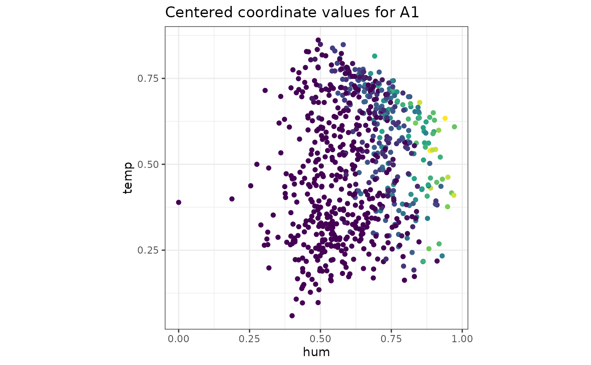
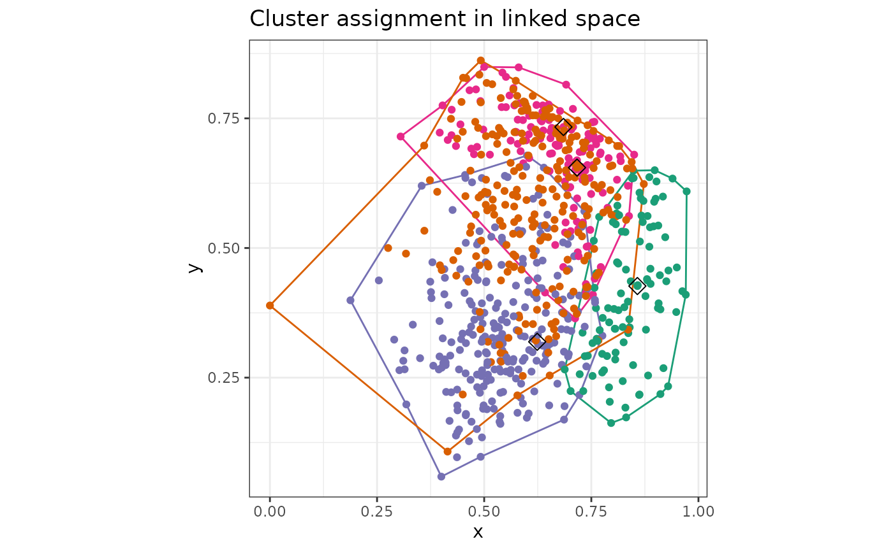

How to Use makePlots
make-plots.RmdOverview
This vignette describes the usage of the makePlots()
function.
makePlots is a function to generate the plots as seen in
the GUI outside of it, so they can be saved and shared. Plots that have
random or non deterministic outcomes have a seed set so they can be
reproduced.
makePlots has got the same inputs as pandemonium (see
“Data input for pandemonium”) with the exception for settings. This
replaces the GUI in the app with one named list to define all settings.
Two other small differences in the input to the function are as follows.
CovInv is specified for each space. Coordinate functions
cannot be passed as a named list instead the functions themselves are
passed as getCoordsSpace1 and getCoordsSpace2.
makePlots also allows for many of the calculations to be
performed once with makeResults() this allows for the many
plots to be made without redoing calculations everytime see below for
more details.
settings
The named list settings has some values that must be
specified for every call to makePlots while others are
optional or only required for certain plots. The required values for
every call are as follows:
| Settings | Description |
|---|---|
k= |
Numeric, number of clusters |
linkage= |
Linkage used by stats::hclust
|
metric= |
Metric used by getDists
|
plotType |
Plot to create. Each type and their required settings are described below. |
linkagecan be one of the following: “complete”, “single”, “average”, “median”, “centroid”, “mcquitty”, “ward.D”, “ward.D2”
metriccan be one of the following: “euclidean”, “maximum”, “manhattan”, “canberra”,“binary”, “minkowski”,“user”
Plot specific settings
Each plotType has got its own required settings. For
each plot type these are described as follows:
| Plot | Description | Required settings |
|---|---|---|
| “PC” | Parallel coordinate plot |
filt= subset of 1:k (number of clusters) to show in the
plot. centre= TRUE or FALSE:
should centred coordinates be plotted. scale=
TRUE or FALSE: should scaled coordinates be
plotted. |
| “WC” | Plot of clustering on axes from space 2 |
x=,y= column names of space 2 to be drawn
showalpha= TRUE or FALSE to show alpha hulls
WCa= alpha value for alpha hulls |
| “chi2” | Plot of score on axes from space 2 |
x=,y= column names of space 2 to be drawn
Note that a function that returns values must be passed in getScores
|
| “sigBins” | Plot of bins on axes from space 2 |
x=,y= column names of space 2 to be drawn
Note that a function that returns bins must be passed in getScores
|
| “heatmap” | Ordered dendrogram plot of clustering | no additional parameters |
| cluster stats | Plot of cluster stat vs number of clusters | One of the following is what is given as plotType:
“within.cluster.ss”, “wb.ratio”,“pearsongamma”, “dunn”, “ch”, “rmax”,
“dmax” “dmin”, “dchi2rand” |
| “Obs” | Plot space 1 variable on axes from space 2 |
Obs= name of variable from space 1
` x=,y= column names of space 2 to be
drawn |
The following plotTypes are for high dimension views:
“tour”
A detourr tour of the high dimensional space.
| Settings | Description |
|---|---|
tourspace= |
One of “space1” or “space2” to show data of in tour |
colouring= |
How to colour points in the plot. One of “clustering”, “user”, “bins”, “score” |
user_group= |
User defined grouping for each point used if “user” is passed for
colouring
|
out_dim= |
Dimension of output display. Numeric, possible values are 2 or 3 |
tour_path= |
Tour path and type to use, one of “grand”,“cmass”,“holes”,“lda”,“pda”,“dcor”,“origin”,“spline”,“radial”,“mahalanobis”,“anomaly” |
display= |
Display type, one of “scatter”,“slice” |
radial_start= |
Projection to use as start of radial tour, one of “random”,“cmass”,“holes”,“lda”,“pda”,“dcor”,“origin”,“spline”,“mahalanobis” |
radial_var= |
Variable to remove by radial tour |
slice_width= |
Relative slice volume. Numeric |
seed |
Set the seed for the function |
“dimRed”
A dimension reduction view of the high dimensional space.
| Settings | Description |
|---|---|
dimspace= |
One of “space1” or “space2” to use |
colouring= |
How to colour points in the plot. One of “clustering”, “user”, “bins”, “score” |
user_group= |
User defined grouping for each point used if “user” is passed for
colouring
|
algorithm= |
Name of algorithm used for dimension reduction |
dimReduction |
Function for calculating dimension reduction see “using dimension reduction” for more details |
seed |
Set the seed for the function |
results
The results parameter allows for faster computation times using the
makeResults() function.
This function creates a list of results used by
makePlots that are normally computed if not provided
through the results parameter. makeResults takes all of the
same parameters as makePlots, the settings that need to be
provided are k, linkage and
metric. The output is then passed to makePlots
and the previous settings are no longer need to be provided.
A typical use is as below.
r <- makeResults(space1 = Bikes$space1, settings = list(k = 4, metric = "euclidean", linkage = "ward.D2"), cov = cov(Bikes$space1), space2 = Bikes$space2, getScore = outsideScore(Bikes$other$res, "Residual"))
makePlots(space1 = Bikes$space1, settings = list(plotType = "Obs", x = "hum", y = "temp", obs = "A1"), cov = cov(Bikes$space1), space2 = Bikes$space2, getScore = outsideScore(Bikes$other$res, "Residual"), results = r)
makePlots(space1 = Bikes$space1, settings = list(plotType = "WC", x = "hum", y = "temp", WCa = 0.5, showalpha = TRUE), cov = cov(Bikes$space1), space2 = Bikes$space2, getScore = outsideScore(Bikes$other$res, "Residual"), results = r)